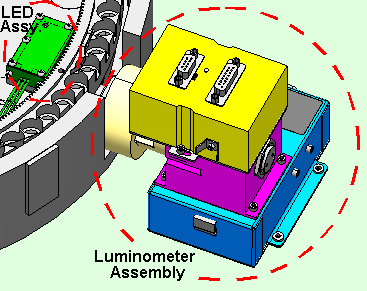
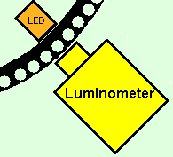
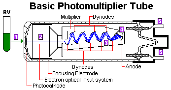
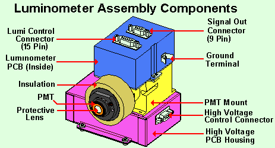
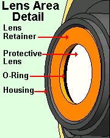
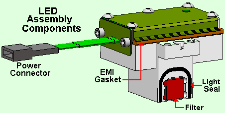
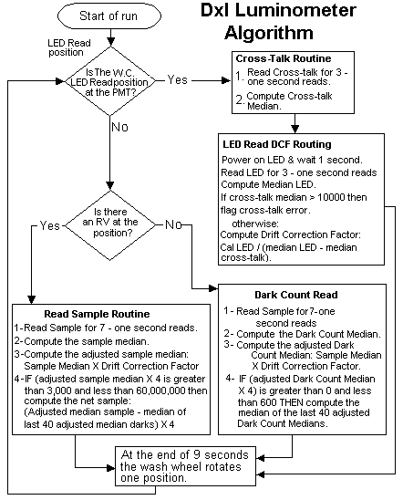

Luminometer and LED Operating Principles
Uniqueness
The DxI luminometer and LED assemblies are unique to the DxI. They are not interchangeable with the luminometer or LED assemblies in any other Beckman Coulter product.
Module Function
The LED provides a consistent quantity of light as a reference for the luminometer that is used for determining if the luminometer has drifted or not.
- Light output of samples that have substrate added. The resultant reaction produces light. The luminometer reads this light and creates a signal of pulses. These pulses are counted by electronic circuitry and converted to RLUs.
- Light output of the LED.

Location
The DxI luminometer is located at the right front side of the analytical module, outboard of the wash carousel.
The LED is located at the right front side of the analytical module, inboard of the wash carousel, directly in front of the luminometer.

Cautions and Warnings
These cautions and warnings apply to the luminometer.
- Never shine a flashlight around the luminometer while the PMT is powered on.
- Never bring a strong magnetic field close to the luminometer while the luminometer is powered on.
- Before removing the covers on the analytical module, turn off the power to the PMT.
- Cap the PMT whenever it is removed from the analytical module.
Manufacturing Setup
In manufacturing, an ELS "electronic standard" is used to calibrate the LED. The LED is then used to set the PMT gain by adjusting the luminometer high-voltage control. Once the LED is calibrated and the value is saved, the LED is the calibrated light source for the instrument. A drift correction factor that is established each time the instrument reads the LED is used to adjust for any drift in the luminometer. This calibration allows each instrument to produce a similar RLU output.
Luminometer and LED Operational Overview
- The wash carousel moves the reaction vessels to a position directly in front of the luminometer. Here, the vessel positioner securely holds the vessel in position using a spring.
Note: DxI 600 serial numbers 900724 and above and DxI 800 serial numbers 603209 and above are no longer manufactured with a spring finger.
- The luminometer reads the vessel. Each time the wash carousel rotates to a position other than the LED read position, either a dark count (no vessel is present) or a sample count (reaction vessel is present) is performed. The count takes the median RLU of seven consecutive readings. Each reading is the photon count (RLUs) in one second.
- The read value is sent to the DAQC PCB for display.
- The wash carousel moves the reaction vessel out of the luminometer read position.
- Another reaction vessel is moved into the luminometer read position and the process is repeated.
Technical Operation
The luminometer is set up for photon counting, so the photo multiplier tube (PMT) is functioning in a digital mode. For each photon event, a current pulse is generated. Current to voltage conversion is used to produce a voltage spike that is counted as a relative light unit (RLU). The photon counting mode offers excellent linearity over a wide range. The lower limit of the count rate linearity is determined by the number of dark current pulses and the upper limit by the maximum count rate. The maximum count rate further depends on the pulse-pair resolution, which is the minimum time interval at which each pulse can be separated.
| Parameter | Value |
|---|---|
| PMT head-end size | 13 millimeter |
| Wavelength of light measured by the PMT | 300 to 650 nanometers |
| Anode voltage | -1000 (equally divided across the dynodes by a voltage divider) |
| Number of dynodes | 10 |

The electron multiplier section includes ten electrodes called dynodes. Each dynode carries a charge of about +100 V more than the previous dynode in the chain. As electrons are emitted from a previous dynode, the electrons are focused to the next dynode by the increasing positive voltage. The electrons strike the next dynode and are multiplied. The cascade of emitted electrons continues to grow at each dynode. Finally, the stream of electrons, which began perhaps as a single electron, is collected by an anode where it appears as an electrical current.
- An enzyme attached to the sample reacts with the substrate to produce light output that is proportional to the sample concentration. Emitted light strikes the end of the photocathode.
- The photocathode emits photoelectrons (electrons) into the vacuum tube.
- The focusing electrode directs the photons to the electron multiplier. The electron multiplier contains ten dynodes. Each dynode deflects and multiplies the photons using a process called secondary emission.
Note: As each electron collides with a dynode, the electron knocks off more than one new electron. Because of secondary-emission multiplication, the PMT provides extremely high sensitivity and exceptionally low noise. A photon striking the photocathode would usually yield the emission of a single electron but the multiplier can create a final output of one million electrons for each electron emitted. This is the gain of the PMT and it is very large.
- The photons move from dynode to dynode until they reach the anode, where the photons are collected.
- The collected photons produce an output signal that leaves on one of the socket pins.
Drift Correction Factor and LED Read
Each location in the wash carousel contains a small hole in the outboard side for the light emitted by the sample to enter the luminometer. Only one of the locations on the wash carousel has a small hole on the inboard side to allow LED light to enter the luminometer. From this LED read, the drift correction factor (DCF) is calculated and applied to all reads from that revolution of the wash carousel.
The LED provides a consistent quantity of light to allow the instrument to compensate for luminometer drift. LED reads are taken to view the stability of the luminometer. After the crosstalk read (while the carousel is still at the crosstalk read position), the LED is powered on and the median of three consecutive one-second reads is used to adjust for any PMT drift.
Because the LED is considered a very stable and accurate source of light, it is used to create a DCF that adjusts the PMT readings up or down. All sample and dark count readings are adjusted by the DCF to compensate for any PMT drift. The read value is sent to the DAQC PCB for conversion to RLUs. A new reading is obtained once per revolution of the wash carousel.
Dark Counts
Dark count reads are taken whenever a vessel is not present in a position (excluding the LED read position). The dark count read is stored in a FIFO and the median of 40 dark count reads is subtracted from the reads for the wash carousel revolution following that dark count read.
Crosstalk
When the wash carousel is at the LED read position, the median of three consecutive one-second reads is used to check for stray light that could affect the reading. This is called the crosstalk reading. If the crosstalk reading is too high, the software generates an error and the reading is skipped.
Luminometer Components


| Component | Description and Function |
|---|---|
| Connector, Lumi Contro | Provides shielded signal path for the luminometer power and status signals. |
| Connector, Signal Output | Provides a shielded signal path for the luminometer counts signal. |
| Insulation | Helps maintain a constant temperature on the PMT. The PMT is heated by the analytical module housing heaters. |
| Lens, Protective | Protects the PMT lens from debris and damage. If done carefully, this lens can be cleaned with a lint-free cloth and DI water. |
| PCB, High Voltage | Creates the high voltage necessary to operate the PMT. |
| PCB, Luminometer | Provides amplification of the PMT signal, pulse detection, and a divide by four prescaler to reduce the frequency of the pulses before being sent to the DAQC for counting.
The luminometer divides (two flip-flops in series) the photon counts by four (raw RLUs in Access terminology), and then the software multiplies the count (adjusted RLUs). This done to reduce the transmission rate (a radiant emission issue) in the wire between the luminometer and the counter on the DAQC PCB in the card cage. |
| Photo Multiplier Tube (PMT) | A tube consisting of an evacuated envelope with a photocathode that emits electrons when exposed to light. These electrons are accelerated by a positive electrostatic field and fall on a metal surface where they emit secondary electrons that are again accelerated to generate more electrons at the next metal surface, and so on. The whole arrangement is a combination of a simple photocell with a high-gain amplifier in a self-contained unit. |
| Terminal, Ground | Provides a method of positively grounding the luminometer assembly enclosures to the instrument chassis. |
LED Components

| Components | Description and Function |
|---|---|
| Connector, Power | Supplies power to operate the LED. |
| Filter, Light | A gray (neutral density) lens that reduces the amount of light of all wavelengths that passes through it. The LED is operated at a fairly high current level (20 milliamps) for stability. This amount of current causes the LED to emit more light than the luminometer can read (would saturate the PMT). The filter reduces the amount of light reaching the luminometer, allowing it to operate in its normal operating range. |
| Gasket, EMI | Prevents electromagnetic interference (EMI) from affecting the LED circuitry. |
| LED (not shown) | Provides a constant source of light as a reference for checking and adjusting the luminometer. |
| Seal, Light | Seals the LED assembly against the inboard surface of the analytical module housing to prevent any stray light from entering the LED area or wash carousel. |
Algorithm Diagram

- If there is an odd number of reads, then the value at the center of the list is the median.
- If there is an even number of reads, then the average of the two values at the center of the list become the median.
Luminometer Shielding
- Separating the signal and power cables from the original harness into four separately shielded cables.
- Special RLU count output connector and cable, specifically designed for high frequency signal transmission.
- D-type connectors and shielded cables to reduce RFI susceptibility.
- Designing special RFI tight enclosures for all luminometer components.
Interacting Devices
- DAQC PCB.
- LED assembly.
- Wash carousel.